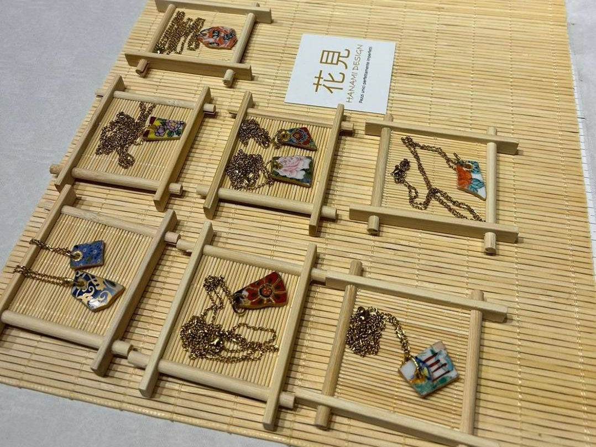
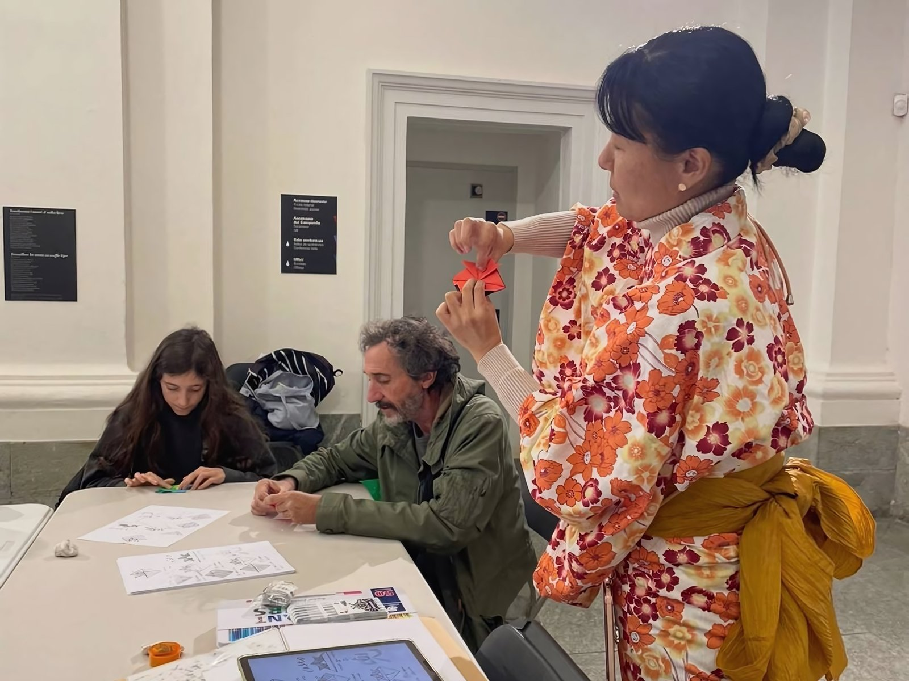

Dalla mostra “Eroi, evoluzione di un mito. Dal Giappone antico al contemporaneo” del Forte di Bard è nata l'idea di una Giornata del Giappone: un progetto a tutto tondo capace di attivare tutti gli spazi del Forte e tutti i suoi pubblici, con l'obiettivo di creare un'esperienza immersiva che animasse il luogo a 360°.
Ho strutturato un palinsesto di laboratori, workshop, eventi e momenti performativi dedicati alla cultura giapponese.
Gli spazi attivi hanno incluso la mostra con visite guidate, le sale conferenze con performance e talk tematici, le sale private dedicate a workshop e attività e il ristorante con un menu a tema, il tutto coordinato da un allestimento degli spazi a tema giapponese.
Sul fronte logistico ho curato le prenotazioni anticipate dei laboratori, una tariffa comprensiva dell'intera giornata e slot orari a incastro per ogni attività. Il risultato: sold out per ogni evento in programma.
Key Activities
- Relazioni con artisti
- Ideazione e strutturazione del palinsesto della giornata
- Gestione logistica: prenotazioni, tariffa giornaliera e slot orari
- Promozione evento on e offline
- Allestimento
- Coordinamento on site evento
Galleria

